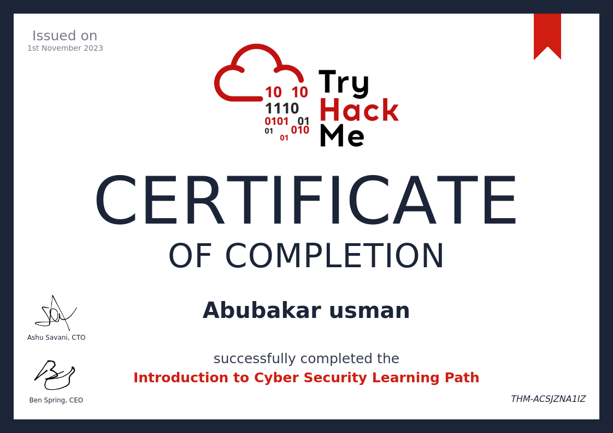

Intro

Welcome to My Portfolio! Hello there! I'm Abubakar Usman, a dedicated Computer Science and Engineering student with a specialization in Cybersecurity, currently honing my skills at SRM University. Technology isn't just my field of study; it's my passion. With a fervor for all things tech, I embark on a journey where innovation meets security. awesome work.
Ever since I laid my hands on my first computer, I've been captivated by the endless opportunities technology offers. It's not just about codes and circuits; it's about transforming ideas into reality, shaping the future, and solving real-world problems. My passion drives me to explore the depths of programming, the intricacies of networks, and the challenges of cybersecurity.
Work

I am a dedicated Computer Science and Engineering student specializing in Cybersecurity at SRM University, with a profound passion for technology and a keen interest in ensuring digital security. While I may not have professional experience yet, my enthusiasm for the field is boundless. I am actively seeking opportunities to apply my knowledge and skills, aiming to contribute meaningfully to cybersecurity projects. Eager to learn, grow, and innovate, I am open for collaboration and ready to embark on the journey of practical experience in the realm of cybersecurity.
About

I am a curious mind and a relentless problem solver. My fascination with the intricate world of cybersecurity led me to specialize in this dynamic field. As a student, I am deeply engaged in exploring the ever-evolving landscape of digital security, always seeking to push the boundaries of what's possible.
Contact
Certificates
Junior Penetration Tester Certificate
Welcome to my Junior Penetration Tester Certificate! This certification represents my expertise in penetration testing techniques and methodologies. I acquired this certificate from TryHackMe, showcasing my practical skills in identifying and fixing security vulnerabilities in various systems.
Red Teaming Certificate

Presenting my Red Teaming Certificate! This certification signifies my advanced knowledge in offensive security techniques, including ethical hacking, network exploitation, and social engineering. Achieved through rigorous training on TryHackMe, this certification demonstrates my ability to simulate real-world cyber attacks for improving security defenses.
CompTIA Security+ Certificate

Introducing my CompTIA Security+ Certificate! This globally recognized certification validates my knowledge in cybersecurity essentials, network security, and risk management. By earning this certification, I demonstrate my expertise in securing networks, systems, and applications, ensuring a strong foundation in the field of cybersecurity.
Fundamentals of Web Security Certificate

Behold my Fundamentals of Web Security Certificate! This certification showcases my understanding of web application security principles and best practices. Acquired through comprehensive training, it demonstrates my ability to identify and mitigate vulnerabilities in web applications, ensuring a secure online environment for users and businesses.
Pre Security Certificate

My Pre Security Certificate! This certification reflects my foundational knowledge in security fundamentals. It serves as the basis for my advanced certifications and expertise in the cybersecurity domain.
Introduction to Cyber Security Certificate

Here's my Introduction to Cyber Security Certificate! This certification marks my entry into the fascinating world of cybersecurity. It covers essential concepts and practices, laying the groundwork for my cybersecurity journey.